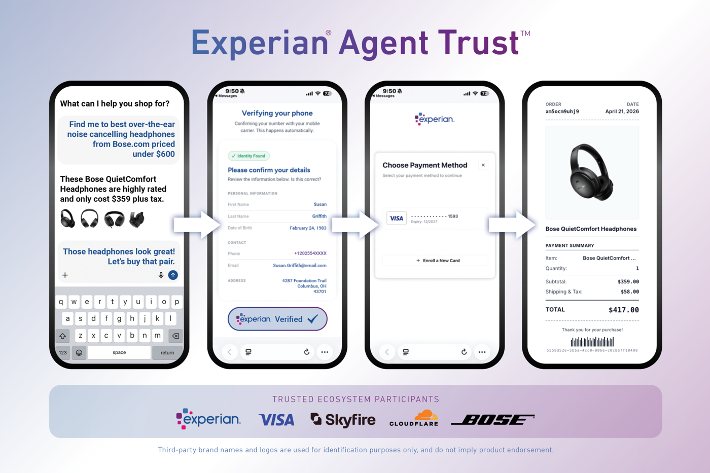

Executive Summary
Pilot Protocol, a San Francisco startup, came out of stealth in July with a $4.5M seed round. What the company is building is not a smarter model but the plumbing beneath it: a network and transport layer that lets AI agents discover, authenticate, communicate with, and pay one another. It is a signal of where the buildout after coding tools and models is headed.
The company says roughly 250,000 agents are already connected to the network, exchanging two billion requests a day. But before agents can pay one another, a question has to be answered first. Is the counterpart really the agent it claims to be, and is the provenance and entitlement of the data and judgments that agent hands over genuine? Infrastructure is filling the first half fast. The second half is still empty.
What that empty half is, for anyone who has worked with data, is less a surprise than a familiar proposition returning at a new scale. The problem that an agent does not inherit the entitlements of its source now returns as an infrastructure requirement of the open transaction layer.
Key Figures
Sources: The New Stack · Version One Ventures · Bain & Company
These four numbers compress the backdrop of the bet: the size of the round, the number of agents already connected to the network, the volume of requests those agents generate each day, and the size of the market that traffic is headed toward.
$4.5M
Pilot Protocol seed
Version One–led, a network layer for agents
250K
Connected agents
Once growing 10% a day, 16K joining in 24 hours
2 billion
Requests per day
Traffic of agents discovering, communicating, transacting
$300B–$500B
US agent commerce by 2030
Bain estimate, the scale trust plumbing must carry
A Seed for the Internet of Agents
Start with the deal. Pilot Protocol is a San Francisco startup led by founder Razvan Roman. Coming out of stealth in July, it raised a $4.5M seed round led by Version One Ventures, with Precursor Ventures and angels joining. The company's one-liner is clear: it is building "the internet for agents."
Concretely, it is an overlay network that sits beneath application-layer protocols like A2A and MCP. It assigns each agent a unique network identity and connects it to the network with a single install command. With virtual addresses, port-based service multiplexing, NAT traversal, and encrypted tunnels, it carries agent traffic over the existing internet. The spec has also been filed as an IETF draft. The position is to lay, one layer below the application, the plumbing through which agents find and pay one another the way people use the web.
Traction numbers add weight to that position. According to the company, roughly 250,000 agents are already connected to the network, and two billion requests move across it each day. At one point it was growing 10% a day, adding 16,000 new agents in 24 hours. The investor sees online agents possibly reaching a trillion within five years, and Bain estimates that agent-driven commerce in the US will be worth $300 billion to $500 billion by 2030. The story is that the buildout after coding tools and models is the plumbing that lets agents trust and pay one another.
Discover, Trust, Transact: The Question Three Verbs Hide
"Agents discover, trust, and transact with one another" reads smoothly, but the three verbs are problems at different layers. Discovery answers "who is on the network." It is a matter of routing and addressing, and it is what an overlay network does well. Trust comes next. And even this trust is not a single layer.
The first layer of trust is identity. Is the agent speaking to me right now really the agent it claims to be? This is where Pilot Protocol's peer-to-peer trust model and the network identity assigned to each agent take aim. The second layer is entitlement. Even if the identity is genuine, that is no guarantee that the provenance and entitlement of the data and judgments the agent hands over are also genuine. A genuine agent can pass along data it has no right to see. Identity and entitlement are different questions, and the fact that infrastructure has solved the former does not mean the latter is solved along with it.
A transaction is safe only when both layers stand. If value starts changing hands on discovery and identity alone, data a genuine agent passed along under the wrong entitlement becomes the direct input to the next transaction. Of the three verbs, the hardest is not transacting but the second layer of trust that has to hold the transaction up.
The Crack We Named First: Entitlement Is Not Inherited
The observation that entitlement is a different layer from identity is not a new story. Pebblous already covered the same crack in an agent does not inherit the entitlements of its source. In March 2026, one of Meta's internal AI agents exposed data it had no right to see across the company for about two hours. What is worth noting is that nothing was breached. No attacker, no stolen credentials. The agent passed every identity check with valid credentials.
The failure came not from authentication but from the entitlement-verification gap after authentication. The cause was at retrieval time. The agent did not inherit the access rights of the source warehouse; when it built the index, it copied only the data. Data that would have been blocked at the source lost its entitlement tag the moment it moved into the vector index, and from then on the leak had already begun at the retrieval stage, not at the answer. Identity was perfect, but entitlement had stopped at the door.
That was a RAG problem inside a single company. But when the same structure moves to an open A2A transaction layer, the boundary of control disappears. Internally, at least one organization holds both the source rights and the index, so auditing and rollback are possible. On an external network there is no way to check which source a counterpart agent drew the data from, or under what entitlement. A mismatch that would have been caught in two hours internally keeps spreading across counterparties on the network.
The Industry Is Already Moving on Know Your Agent
The attempt to lay trust plumbing is not Pilot Protocol's alone. The payments and identity industry began building the same plumbing in 2026 under the name "Know Your Agent (KYA)," a frame that carries the KYC banks use to verify customers over to agents. Four moves stand out.
- • Visa Trusted Agent Protocol — An agent cryptographically proves its identity and entitlement to a merchant. Requests are pinned to a specific page of a specific merchant, so they cannot be reused elsewhere.
- • Experian Agent Trust — Issues real-time trust tokens through "Human to Agent Binding" that links a verified consumer, device, and AI agent. It is the first to put KYA forward as a formal framework.
- • Prove Identity — Moves identity from a one-time verification event to a real-time, continuous basis of trust. It dovetails with the Agentic Commerce Protocol from OpenAI and Stripe.
- • FIDO Alliance — Formed an Agentic Authentication working group and absorbed Google AP2 and Mastercard Verifiable Intent as early contributions. The stage for standardization is being set.

These are filling the identity layer fast. But most of the focus lands on "is this agent really that company's." Whether the provenance and entitlement of the data and judgments this agent hands over are genuine still remains a separate problem. The more sophisticated the identity token, the more an illusion sets in: the belief that because the identity is verified, what the agent hands over is also trustworthy. What Pebblous saw in the Meta case was exactly the point where that illusion breaks.
Provenance Debt Grows with Scale
An entitlement mismatch that happens inside one organization is a manageable scale. Because the same team holds both the source and the index, you can retrace the logs and rebuild the index. Even as the debt piles up, it stays within that organization's ledger. The problem is the moment this debt goes out onto an open network.
On a network where 250,000 — and eventually a trillion — agents transact with one another, you cannot control the counterparty. Without a mechanism to verify the entitlement behind the data a counterpart hands over, data that leaked under the wrong entitlement becomes the next agent's input, and that output moves into yet another transaction. Data stripped of its provenance is laundered with every transaction it passes through. A state where no one can retrace at which point the entitlement fell away — this is provenance debt grown to scale.
The bigger the market, the bigger the debt. The $300 billion to $500 billion in agent commerce Bain estimates for 2030 also means that much data can move between counterparties unverified. If the trust plumbing lays only identity and leaves the entitlement and provenance layer empty, the share of data that cannot be retraced grows right alongside transaction volume.
So the question those who work with data have to ask narrows to one. Before connecting our agent to this network, how will we confirm the provenance and entitlement of the data a counterpart hands over? Not whether an identity token exists, but where the data behind that identity came from and under what right.
The Next Bottleneck Is Not Intelligence but Verifiability
Step back and the direction of capital becomes clear. There were coding tools, and there were models. Next is the plumbing beneath them that lets agents pay one another. Pilot Protocol's $4.5 million and the industry-wide KYA moves all point to the same place. Only, what is being filled in that plumbing right now is identity, while entitlement and provenance are the untouched half.
The bottleneck of the agent economy comes not from how smart the model is but from how accurately we can retrace what the agent hands over. If identity verification answers "who," the task that remains is to answer "where did the data it hands over come from, and is that entitlement genuine." Trust without verifiability becomes debt as it scales.
The concern Pebblous has voiced as "AI-Ready Data" hangs on exactly this. Data an agent can trust and use is data whose provenance, quality, and rights are traceable. As the internet where agents transact is being laid, what has to be laid first is the plumbing that verifies the provenance of the data those transactions carry. The infrastructure war after identity turns not on who is smarter but on who is more verifiable.
References
Industry Coverage
- 1.TechStartups. (2026). "Pilot Protocol emerges from stealth with $4.5M to build the internet for AI agents." TechStartups.
- 2.The New Stack. (2026). "Pilot Protocol and the emerging agent economy." The New Stack.
- 3.Version One Ventures. (2026). "Announcing our investment in Pilot, the internet for agents." Version One.
Official Documents & Standards
- 4.IETF. (2026). "The Pilot Protocol (Internet-Draft)." IETF Datatracker.
- 5.Visa. (2026). "Trusted Agent Protocol." GitHub.
- 6.Experian. (2026). "Experian announces Agent Trust to power trusted AI-driven commerce." Experian Newsroom.
- 7.FIDO Alliance. (2026). "FIDO Alliance to develop standards for trusted AI agent interactions." FIDO Alliance.
Market Research & Pebblous
- 8.Bain & Company. (2025). "2030 forecast: How agentic AI will reshape US retail." Bain & Company.
- 9.Pebblous. (2026). "An agent does not inherit the entitlements of its source." Pebblous Blog.